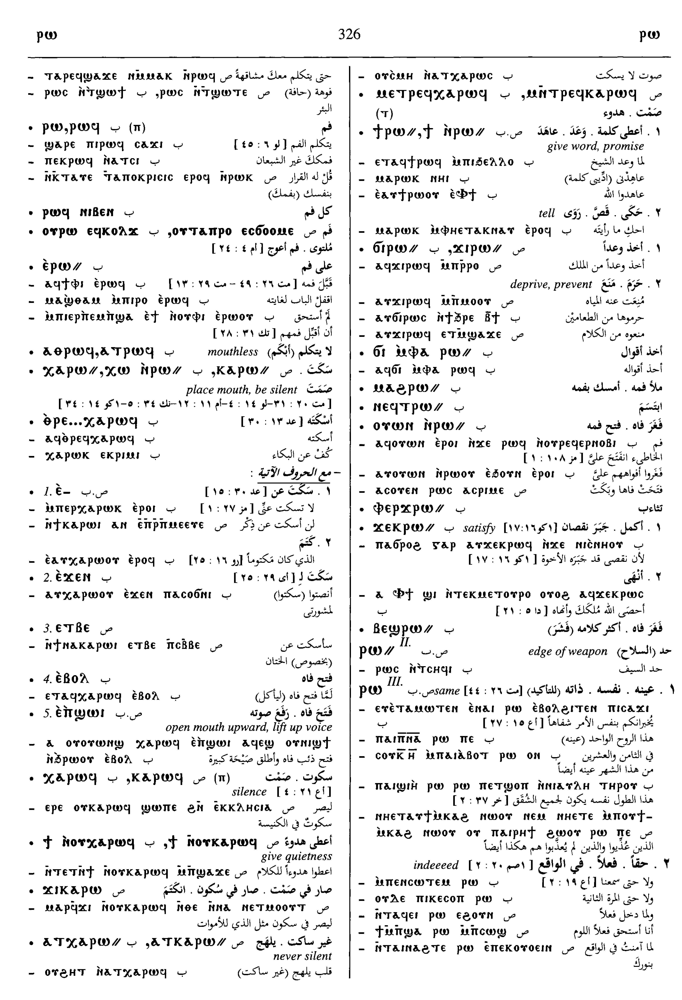

(noun male)
anatomy
mouth [στομα]
edge of weapon
door, gate [θυρα, πυλη]
edge of weapon
door, gate [θυρα, πυλη]


1: mouth, 2: edge of weapon, 3: door, 4: gate
complete++
| mouth1518 | 288a | ||||||||
| ⲁⲧⲣⲱϥ, ⲁⲑⲣⲱϥ | mouthless, not speaking the language1519 | ||||||||
| ⲕⲱ ⲛⲣⲱ⸗, ⲭⲱ ⲛⲣⲱ⸗, ⲕⲁ ⲣⲱ⸗, ⲭⲁ ⲣⲱ⸗ SABF
ⲕⲁⲣⲁⲉⲓⲧ† S |
place, leave mouth, be silent [σιωπαν]1520 | 288b | |||||||
| c ⲉ- | be silent toward, about5957 | ||||||||
| c ⲉϫⲛ- | sim5958 | ||||||||
| c ⲉⲧⲃⲉ- | sim5959 | ||||||||
| c ⲉⲃⲟⲗ | 5960 | ||||||||
| c ⲉⲡϣⲱⲓ | open mouth upward, lift up voice5961 | ||||||||
| ⲕⲁ ⲣⲱϥ, ⲭⲁ ⲣⲱϥ | (noun)silence [σιγη]1521 | ||||||||
| ⲁⲧⲕⲁ ⲣⲱ⸗, ⲁⲧⲭⲁ ⲣⲱ⸗ SB | without leaving mout shut, never silent1522 | ||||||||
| ⲙⲛⲧⲣⲉϥⲕⲁ ⲣⲱϥ S | silence [σιωπη]1523 | ||||||||
| ⲕⲁⲣⲁⲉⲓⲧ† SL | be silent1524 | ||||||||
| ϯ ⲣⲱ⸗ B | give mouth, word, promise1525 | ||||||||
| ⲟⲩⲱⲛ ⲛⲣⲱ⸗ SB
ⲟⲩⲟⲛ ⲣⲟ S |
open mouth1526 | ||||||||
| ϫⲓ ⲣⲱ⸗, ϭⲓ ⲣⲱ⸗ SB | deprive, prevent, anticipate1527 | ||||||||
| ϫⲉⲕ ⲣⲱ⸗ B | fill mouth, satisfy [πληρουν]1528 | 289a | |||||||
| door, gate1529 | |||||||||
| ⲁⲧⲣⲟ | doorless [αθυριδωτος]1530 | ||||||||
| ⲡⲁⲡⲣⲟ, ⲫⲁⲡⲣⲟ SB | be of the door, doorkeeper1531 | ||||||||
| ϩⲁⲛⲣⲟ SB
ⲁⲛⲣⲟ, ϩⲟ ⲛⲣⲟ B |
(noun male)porch (?) [υπερθυρον]1532 | 289b | |||||||
| ⲣⲁ- S
ⲣⲉ- SB ⲗⲉ- F |
(noun male)part, fraction1533 | ||||||||
| ⲧⲣⲉ- S
ⲧⲉⲣⲉ- B |
(noun male)S once, f once, meaning same1534 | ||||||||
| ⲉⲣⲛ- (ⲉⲣⲟ ⲛ-) S
ⲁⲣⲛ- AL ⲉⲗⲉⲛ- F ⲉⲣⲱ⸗ SB ⲁⲣⲱ⸗ AL ⲉⲗⲱ⸗ F |
(preposition)to mouth of, to, upon mostly with vb of motion
against mostly ⲉⲣⲱ⸗ ⲛ-1535 |
||||||||
| ⲛⲣⲛ- A | (preposition)meaning same1536 | ||||||||
| ϩⲁⲣⲛ- (ϩⲁⲣⲟ ⲛ-) S
(ϧⲁⲣⲉⲛ-) B ϩⲁⲣⲱ⸗ S ϧⲁⲣⲱ⸗ B |
(preposition)under mouth of, beneath, before mostly = Gk dat1537 | ||||||||
| ϩⲓⲣⲛ- (ϩⲓⲣⲟ ⲛ-) SAL
ϩⲓⲣⲉⲛ- B ϩⲓⲗⲉⲛ- F ϩⲓⲣⲱ⸗ SALB ϩⲏⲗⲱ⸗, ϩⲓⲗⲉ⸗, ϩⲉⲗⲉ⸗ (?) F |
(preposition)at mouth, door of, at, upon1538 | 290a | |||||||
| ⲉⲃⲟⲗ ϩⲓⲣⲛ- SB | (preposition)from before8833 | ||||||||
See also:
Homonyms:
| view | ⲧⲁⲡⲣⲟ SALB ⲧⲁⲡⲣⲁ, ⲧⲁⲡⲗⲁ F | (noun female) mouth [στομα]126 |
| view | ⲡⲁⲓϭⲉ A | (noun female) mouth1309 |
| view | ⲕⲏⲡⲉ, ϭⲏⲡⲉ, ϭⲉⲡⲏ S ⲭⲏⲡⲓ B | (noun male) vaulted place, cellar, canopy [στεγη, καλυμμα, καμαρα]
palate of mouth301 |
| view | ⲱϣ SALBF ⲉϣ- SB ⲱϣ- SL ⲁϣ- SAF ϣ- B ⲟϣ⸗ SB ⲁϣ⸗ SaL p c ⲁϣ- B | (verb) cry, announce, sound
― intr: [ηχειν, βοαν, κραζειν] ― tr: [βοαν, καλειν] read S,A,L,B,F ― intr: [αναγινωσκειν] ― tr: [αναγινωσκειν] promise, vow B ― intr: [ευχεσθαι, επαγγελεσθαι] ― tr: [ευχεσθαι, επαγγελεσθαι, ομολογειν] expect S [νομιζειν]467 |
| view | ϩⲁⲉⲓⲧ, ϩⲁⲓⲉⲓⲧ, ϩⲁⲉⲓⲏⲧ, ϩⲁⲓⲧ, ϩⲉⲉⲓⲧ, ϩⲏⲉⲓⲧ, ϩⲏⲓⲉⲓⲧ, ϩⲟⲉⲓⲧ S | (noun female) gateway, porch, forecourt [πυλων]274 |
| view | ⲥⲃⲉ SB ⲥⲃⲏ F | (noun male) door [θυρα, προθυρον]1376 |
| view | ϣⲟⲩϣⲧ SLB ϣⲱϣⲧ SA | (noun male) window [θυρις]
niche, alcove [θυρις]2021 |
| view | ⲟⲩⲱⲛ SALBF ⲟⲩⲛ- SA ⲟⲩⲉⲛ- SB | (noun male) part
― alone [μερος, μισθος] ― numeral preceding S,F ― numeral following S,A1729 |
| view | (ϩⲟⲟⲩⲣⲉ), ϩⲟⲩⲣⲉ- SL ϩⲟⲩⲣ-, ϩⲟⲩⲣⲱ-, ϩⲟⲩⲣⲱ(ⲱ)⸗, ϩⲟⲩⲣⲟ⸗ S ϩⲟⲩⲣⲱ⸗ B | (verb) tr: deprive
― c double acc [στερειν, παραλογιζεσθαι, αποσπαν] ― c ⲉ- sim ― passive2321 |
| view | (ϣⲱⲛϩ), ϣⲟⲛϩ⸗ B | (verb) tr: deprive [απογινωσκειν]1946 |
| view | ϣⲱⲱⲛⲉ S ϣⲱⲛⲁ F ϣⲉ(ⲉ)ⲛⲉ- SSf ϣⲁⲛⲉ- F ϣⲟ(ⲟ)ⲛ⸗, ϣⲟⲟⲛⲉ† S | (verb) tr: exclude, deprive (?) [εξαιρειν]
qual: deprived272 |
| view | ϩⲣⲣⲉ S ϩⲉⲣⲓ, ϩⲟⲩⲣⲱⲟⲩ† B | (verb) intr: cease, be still [κοπαζειν, παυεσθαι]
qual: [ηρεμος] tr: [πραυνειν]2261 |
| view | ⲥϭⲣⲁϩⲧ, ⲥϭⲣⲉϩⲧ, ϣϭⲣⲁϩⲧ, ⲥϣϭⲣⲁϩⲧ S ⲥϭⲣⲏϩ AB | (verb) intr (qual): rest, pause, be quiet [ησυχαζειν, σιωπασθαι]
tr (refl): S, rest oneself233 |
| view | ⲙⲧⲟⲛ SB ⲉⲙⲧⲟⲛ SB ⲙⲧⲁⲛ ALF ⲉⲙⲧⲁⲛ F ⲙⲟⲧⲛ† S ⲙⲁⲧⲛⲉ† A ⲙⲟⲧⲉⲛ† B ⲙⲁⲧⲛ† F | (verb) intr: be at rest, at ease, be relieved of sickness [αναπαυεσθαι, υγιαζειν, ευξυχειν, ησυχαζειν]
qual: easy, hale, satisfied [υγιης, ισχυων] tr (refl): ― rest self [αναπαυεσθαι, αναλυειν, αναξυχειν] ― go to rest, die [τελεουσθαι, αναλυειν]234 |
Homonyms:
| view | ⲣⲟ SB ⲣⲁ F | (noun male) strand, ply of cord1317 |
| view | ⲣⲱ SLB ⲣⲱⲱ S ⲣⲟⲩ A ⲣⲟ B ⲗⲱ F | (particle) enclitic particle, emphatic or explicative, often untranslatable
― same, again, also esp B ― emphasis or contrast indeed, but ― explicative ― emphasis, even, at all, at last ― in question, then ― after various particles, ⲁⲣⲏⲩ, perhaps, indeed379 |
Dawoud: 323a - 323b, 323a, 323a, 325b - 326b, 326b, 316a - 316b, 629a, 629b, 681b, 449b


